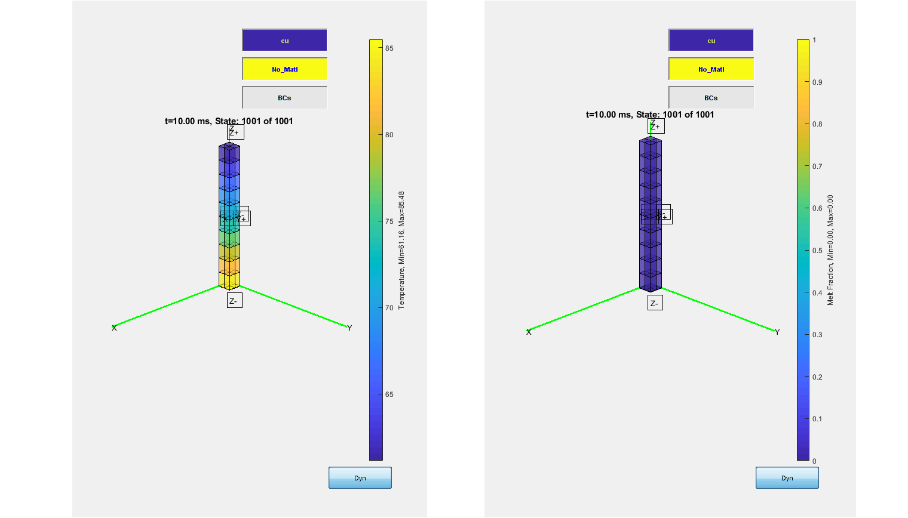
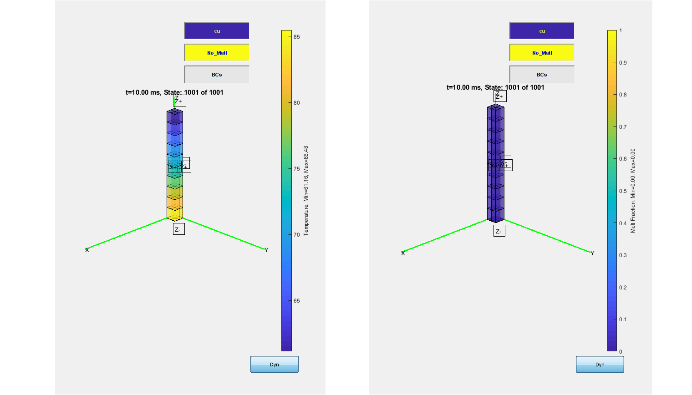
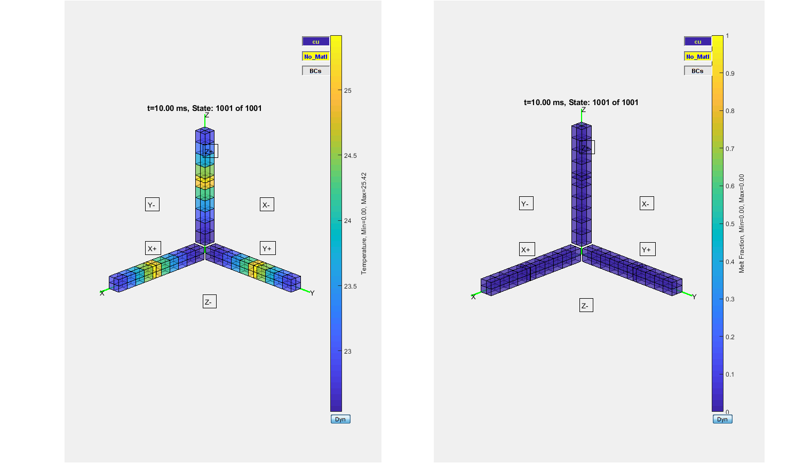
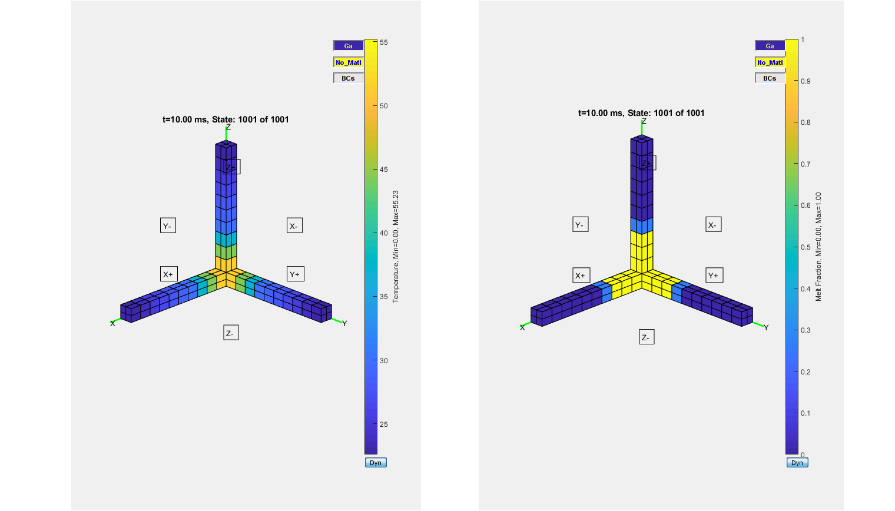
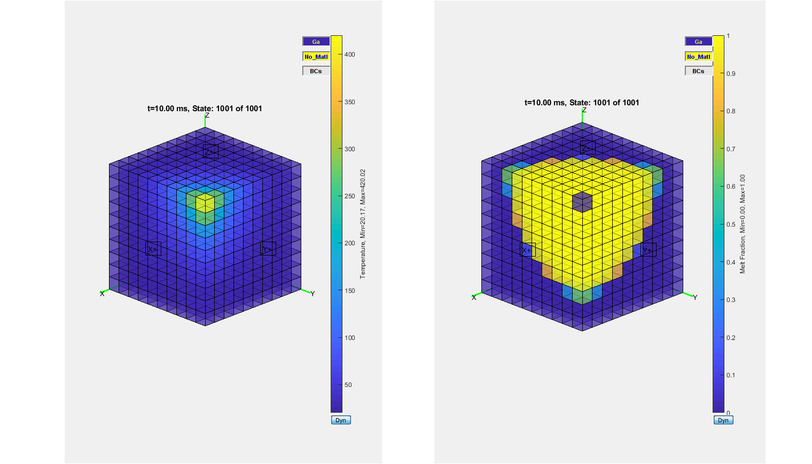
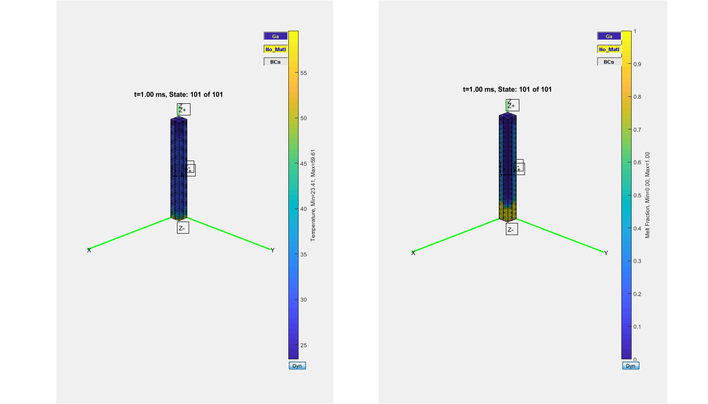

Contents
%%WCC How to run ParaPower % This M files executes the set of validation test cases for ParaPower % The test cases to run exist as shortcuts/links in the Validation/Cases % directory. The actual file should exist in the Validation/CasesHold % directory. % The first time a case is run, a file is generated with the name % CASENAME_Results.ppmodel. This file holds both the model definition as a % the results of the analysis at the time. % The file can be loaded into the GUI using the "load profile" GUI button. % The model will be loaded, but no the results.
WCC - TestCaseWildCard - choose the case here
TestCaseWildCard = 'c*.m'
TestCaseWildCard = 'c00*.m'
WCC - c050 does not work
clearvars -EXCEPT TestCaseWildCard addpath('..'); %include above directory which contains the parapower code CaseDir='Cases'; %Update this to include the directory that will hold the case files. if exist('TestCaseWildCard') disp(['Only running casing meeting the following wildcard (TestCaseWildCard): ' TestCaseWildCard]) else disp('TestCaseWildCard variable doesn''t exist, running all testcases.') TestCaseWildCard='c*.m'; end TestCasesFspec=[CaseDir '/' TestCaseWildCard ]; TestCasesFspec=strrep(TestCasesFspec,'**','*'); testcasefiles=dir([TestCasesFspec '*']) if ispc testcasefiles=[testcasefiles dir([TestCasesFspec '.lnk'])]; end fprintf('\n') figure(1);clf figure(2);clf %drawnow load('DefaultMaterials.mat','MatLib') OrigMatLib=MatLib; clear MatLib Compare=[]; for Icase=1:length(testcasefiles) clearvars -EXCEPT TestCaseWildCard Icase testcasefiles Compare CaseName=char(testcasefiles(Icase).name); if ispc && strcmpi(CaseName(end-3:end),'.lnk') [path,name,ext]=fileparts(getTargetFromLink([testcasefiles(Icase).folder '\' CaseName])); CaseName=[name ext]; testcasefiles(Icase).folder=path; end CaseName=CaseName(1:end-2); if isempty(str2num(CaseName(1))) fprintf('Executing test case %s...\n',CaseName) VarsOrig=who; addpath(testcasefiles(Icase).folder); eval(CaseName) rmpath(testcasefiles(Icase).folder) CaseExists=true; else fprintf('Can''t execute ''%s''. Name cannot start with a number.\n',CaseName) CaseExists=false; end if CaseExists %Erase all newly created variables in the test case M file VarsNew=who; VarsOrig=[VarsOrig; 'VarsOrig'; 'TestCaseModel'; 'VarsNew'; 'Vi'; 'MFILE']; for Vi=1:length(VarsNew) if isempty(cell2mat(regexp(VarsOrig,['^' VarsNew{Vi} '$']))) % fprintf('Clearing %s\n',VarsNew{Vi}); clear (VarsNew{Vi}) % else % fprintf('Leaving %s\n',VarsNew{Vi}); end end clear VarsOrig VarsNew %Material Properties if isfield(TestCaseModel.TCM,'MatLib') || isprop(TestCaseModel.TCM,'MatLib')
WCC - TestCaseModel used here
MatLib=TestCaseModel.TCM.MatLib;
else
disp('Adding default materials from the material database to the model')
TestCaseModel.TCM.MatLib=OrigMatLib;
%return
end
WCC - .ppmodel was saved
%save([MFILE '.ppmodel'], '-mat', 'TestCaseModel');
WCC - MI was created here
MI=FormModel(TestCaseModel.TCM);
% WCC - only the last time
% if length(testcasefiles)==Icase
if 1
figure(1);clf; figure(2);clf; figure(1)
WCC - Visualize() called
Visualize ('Model Input', MI, 'modelgeom','ShowQ') % WCC set(gcf, 'Units', 'Normalized', 'OuterPosition', [0.1, 0.1, 0.8, 0.8]); snapnow end fprintf('Analysis executing...') tic; GlobalTimeOrig=MI.GlobalTime; MI.GlobalTime=GlobalTimeOrig(1); %Setup initialization
WCC - scPPT was constructed here
S1=scPPT('MI',MI); %Initialize object setup(S1,[]); [Tprnt, T_in, MeltFrac,MeltFrac_in]=S1(GlobalTimeOrig(1:end)); %Compute states at times in ComputeTime (S1 must be called with 1 arg in 2017b) NewResults.Tprnt =cat(4, T_in , Tprnt ); NewResults.MeltFrac=cat(4, MeltFrac_in , MeltFrac); MI.GlobalTime = GlobalTimeOrig; %Reassemble MI's global time to match initialization and computed states. Fi=1; %Could be used to mask for features; (Tprnt would be Tprnt(Mask) NewResults.DoutT(:,1+Fi)=max(reshape(NewResults.Tprnt,[],length(MI.GlobalTime)),[],1); NewResults.DoutM(:,1+Fi)=max(reshape(NewResults.Tprnt,[],length(MI.GlobalTime)),[],1); NewResults.DoutT(:,1)=MI.GlobalTime; NewResults.DoutM(:,1)=MI.GlobalTime; ExecTime=toc; NewResults.ExecTime=ExecTime; NewResults.DateTime=datetime; NewResults.Desc=TestCaseModel.Desc; NewResults.Computer=computer(); NewResults.Matlab=ver('matlab'); if exist([MFILE '.m'],'file') ResultsFile=[MFILE, '_Results.ppmodel']; if exist(ResultsFile,'file') OldResults=load(ResultsFile,'-mat'); if ~isfield(OldResults,'NewResults') disp([ResultsFile ' uses older version of stored results file. ''Results'' variable is now named ''NewResults''.']) OldResults=OldResults.('Results'); else OldResults=OldResults.('NewResults'); end Compare{Icase}.Desc=TestCaseModel.Desc; Compare{Icase}.DeltaTime=NewResults.ExecTime / OldResults.ExecTime; Compare{Icase}.GlobalTime=MI.GlobalTime; DoFList={'Tprnt' 'MeltFrac'}; try if size(NewResults.Tprnt) == size(OldResults.Tprnt) for Idof=1:length(DoFList) if isfield(NewResults,DoFList{Idof}) Compare{Icase}.DOFdesc{Idof}=DoFList{Idof}; Compare{Icase}.DOFdelt{Idof}=OldResults.(DoFList{Idof}) - NewResults.(DoFList{Idof}); end end DoFList={'DoutT' 'DoutM'}; for Idof=1:length(DoFList) if isfield(NewResults,DoFList{Idof}) Compare{Icase}.DOFdesc{end+1}=DoFList{Idof}; Compare{Icase}.DOFdelt{end+1}=OldResults.(DoFList{Idof}) - NewResults.(DoFList{Idof}); end end else Compare{Icase}.DOFdesc={'N/A'}; Compare{Icase}.DOFdelt=[]; disp(['Saved case does not match current case for ' TestCaseModel.Desc ]); end catch ME Compare{Icase}=[]; Compare{Icase}.Desc=''; Compare{Icase}.DOFdelt={[]}; Compare{Icase}.DOFdesc={''}; disp('Previous data comparison impossible') end else fprintf('Results file not found. A new one will be created (%s)\n', ResultsFile); save (ResultsFile,'-mat','NewResults','TestCaseModel') end else disp('Results file not requested.') end fprintf('Complete.\n') % WCC - only the last time % if length(testcasefiles)==Icase if 1 figure(2);clf; pause(.001) StateN=length(MI.GlobalTime); subplot(1,2,1);
WCC - Visualize() called
Visualize(sprintf('t=%1.2f ms, State: %i of %i',MI.GlobalTime(end), StateN,length(NewResults.Tprnt(1,1,1,:))),MI ... ,'state', NewResults.Tprnt(:,:,:,StateN) ... ,'scaletitle', 'Temperature' ... ) subplot(1,2,2);
WCC - Visualize() called
Visualize(sprintf('t=%1.2f ms, State: %i of %i',MI.GlobalTime(end), StateN,length(NewResults.MeltFrac(1,1,1,:))),MI ... ,'state', NewResults.MeltFrac(:,:,:,StateN) ... ,'scaletitle', 'Melt Fraction' ... ) % WCC set(gcf, 'Units', 'Normalized', 'OuterPosition', [0.1, 0.1, 0.8, 0.8]); snapnow end %figure(3);clf; pause(.001) %Visualize(sprintf('t=%1.2f ms, State: %i of %i',StateN*MI.DeltaT*1000, StateN,length(Tprnt(1,1,1,:))),[0 0 0 ],{MI.X MI.Y MI.Z}, MI.Model, MeltFrac(:,:,:,StateN),'Melt Fraction') %disp('Press key to continue.');pause end end DOFDesc={}; CaseDesc={}; for I=1:length(Compare) if ~isempty(Compare{I}.Desc) CaseDesc{I}=Compare{I}.Desc; for J=1:length(Compare{I}.DOFdelt) if size(Compare{I}.DOFdelt{J}(:))==2 PlotCompare(I,J)=sum((Compare{I}.DOFdelt{J}(:)).^2); else PlotCompare(I,J)=sum((Compare{I}.DOFdelt{J}(:,2)).^2); end DOFDesc{J}=Compare{I}.DOFdesc{J}; DeltaTime(I)=Compare{I}.DeltaTime; end end end
WCC - figure 10
figure(10); set(gcf, 'Units', 'Normalized', 'OuterPosition', [0.1, 0.1, 0.8, 0.8]); clf NumCols=2; NumRows=ceil((1+length(DOFDesc))/NumCols); for I=1:length(DOFDesc) subplot(NumRows,NumCols,I+1) barh(PlotCompare(:,I)); set(gca,'yticklabel',strrep(CaseDesc,'_',' ')) xlabel('Sum[RMS(Cur-Canon)]') title(DOFDesc{I}) set(gca,'xscal','log') end if exist('DeltaTime','var') subplot(NumRows,NumCols,1) barh(DeltaTime) set(gca,'yticklabel',strrep(CaseDesc,'_',' ')) title('Wall Time (Current/Canon)') xlabel('time (s)') end snapnow
TestCaseWildCard =
'c00*.m'
Only running casing meeting the following wildcard (TestCaseWildCard): c00*.m
testcasefiles =
9×1 struct array with fields:
name
folder
date
bytes
isdir
datenum
Executing test case c001_1d_unidirectional...
Analysis executing...Transient Analysis Complete.
 
 Executing test case c002_Triad_Unidirectional...
Analysis executing...Transient Analysis Complete.
Executing test case c003_Triad_Unidirectional_0Layer...
Analysis executing...Transient Analysis Complete.
Executing test case c004_Triad_Bidirectional...
Analysis executing...Transient Analysis Complete.
Executing test case c005_Triad_UniPCM...

Analysis executing...Transient Analysis Complete.
Executing test case c006_UniPCM...
Analysis executing...Transient Analysis Complete.

Executing test case c007_BlckPCM...
Analysis executing...Transient Analysis Complete.
Executing test case c008_PCMInitT...
Analysis executing...Transient Analysis Complete.
Executing test case c009_Cube_unidirectional_Variable...
Analysis executing...Transient Analysis Complete.